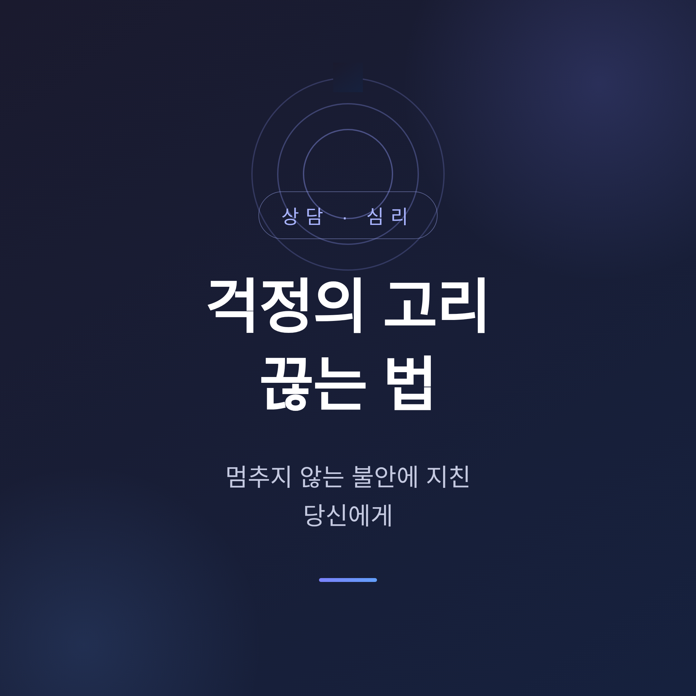
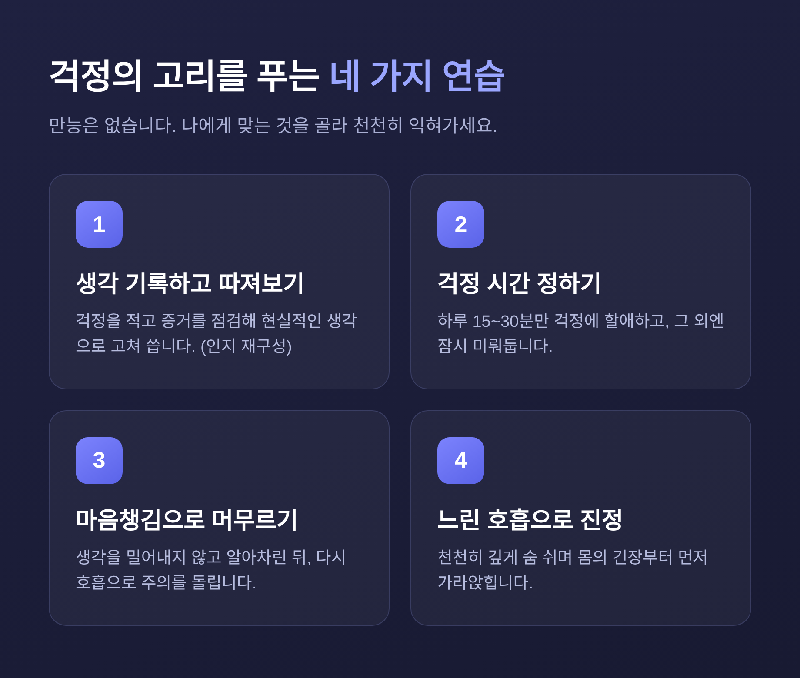
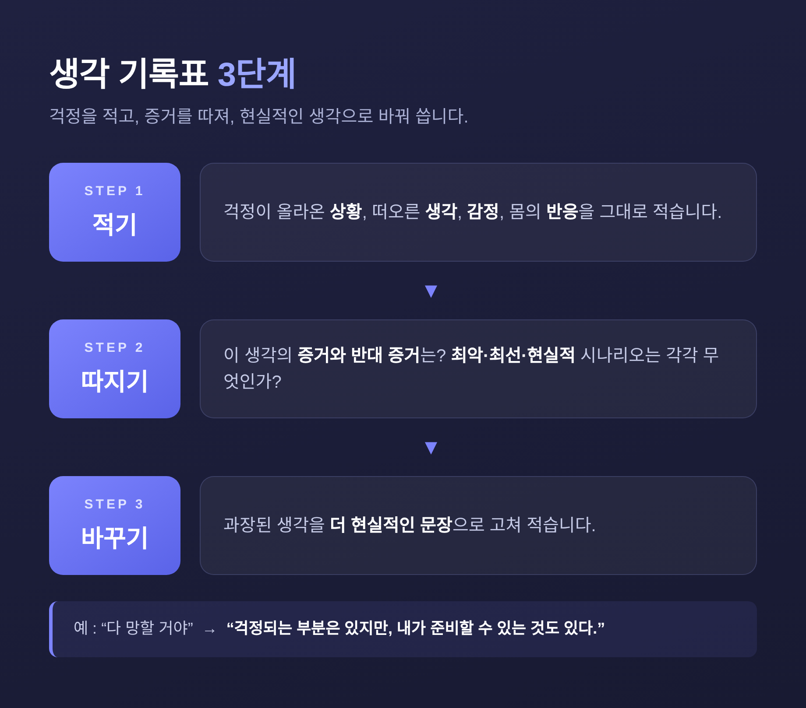
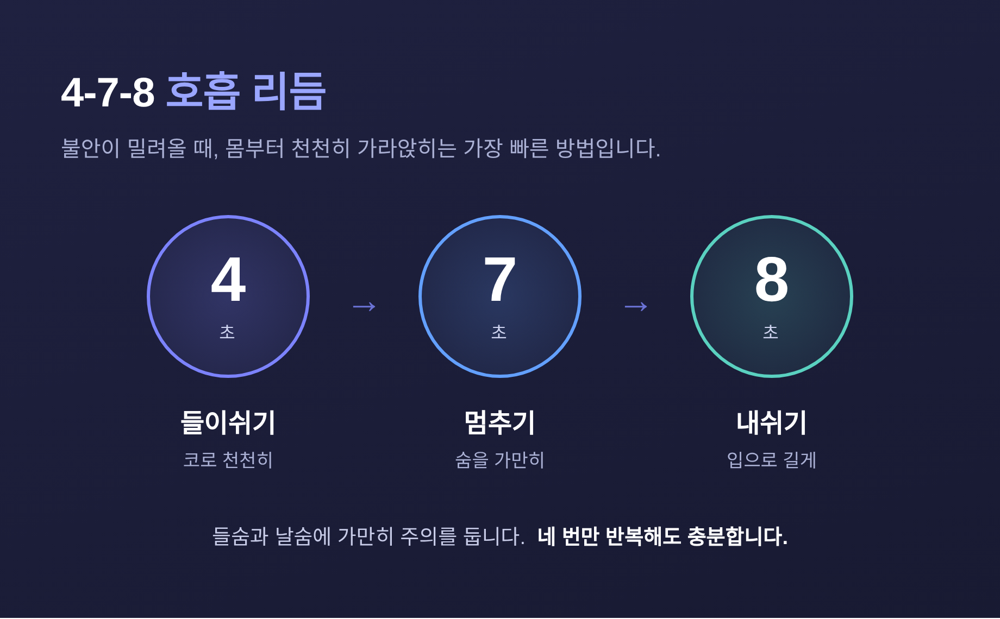
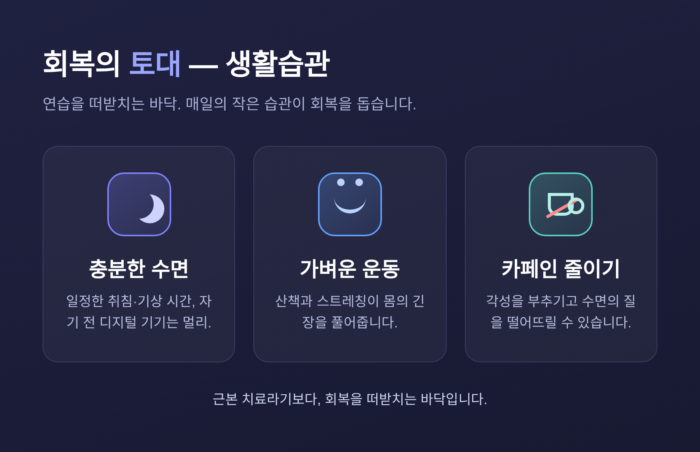

생각 하나가 또 다른 생각을 부르고, 어느새 머릿속이 걱정으로 가득 차는 경험. 누구나 한 번쯤 겪어보셨을 것입니다. 오늘은 이 '걱정의 고리'가 왜 생기는지, 그리고 그것을 조금씩 느슨하게 푸는 연습을 함께 정리해 보려 합니다.
먼저, 3줄 요약
반추는 이미 지나간 일을 반복해서 곱씹는 사고입니다. "그때 그 말을 괜히 했나" 하고 며칠씩 되감는 것이지요.
걱정은 조금 다릅니다. 아직 일어나지 않은 미래를 향합니다. "만약 ~하면 어떡하지"가 꼬리를 무는 쪽입니다.
방향은 다르지만 닮은 점이 있습니다. 둘 다 부정적인 내용을 반복하는 사고의 고리라는 점입니다.
흔히 많이 생각할수록 문제가 풀린다고 믿습니다. 그러나 반추는 오히려 사고를 마비시키고 문제 해결을 방해하는 경우가 많다고 보고됩니다. 직관과 반대로 작동하는 셈입니다.
한 번의 걱정이 다음 걱정을 부르는 데에는 몇 가지 인지적 기제가 작동합니다.
첫째, 위협에 대한 주의 편향입니다. 걱정이 많은 사람은 걱정을 한 차례 겪은 직후 위협에 더 민감해집니다. 걱정이 주의를 키우고, 그 주의가 다시 걱정을 부르는 구조입니다.
둘째, 모호한 정보를 위협으로 해석하는 경향입니다. 같은 상황도 더 나쁜 쪽으로 읽히기 쉽습니다.
셋째, 불확실성을 잘 견디지 못하는 성향입니다. 확실하지 않다는 이유로 결정을 미루고, 부정적인 시나리오를 계속 만들어냅니다. "만약 ~하면"이라는 질문이 여기서 자라납니다.
넷째, 걱정에 대한 양가적 믿음입니다. "걱정해야 대비할 수 있다"는 마음과 "걱정은 도무지 통제할 수 없다"는 마음이 함께 있습니다. 이 둘이 걱정을 놓지 못하게 붙듭니다.
특정 누군가의 이야기가 아니라, 흔히 나타나는 모습을 일반화한 예시입니다.
밤에 켜지는 걱정 스위치. 자리에 누우면 내일 회의, 통장 잔고, 가족의 건강이 줄줄이 떠오릅니다.
결정을 못 내리는 사람. 정보가 충분해도 확실하지 않다며 결정을 미루고 시나리오만 돌립니다.
곱씹는 사람. 지나간 대화 한마디를 며칠씩 되감습니다.
이런 풍경이 낯설지 않으시다면, 아래의 연습들을 가볍게 시도해 보셔도 좋겠습니다.

어느 하나가 만능은 아닙니다. 자신에게 맞는 것을 골라 천천히 익혀가는 편이 좋습니다.
인지행동치료(CBT)는 불안 장애에 경험적으로 입증된 1차적 개입으로 꼽힙니다. 자가 적용은 다음 순서로 시도해 볼 수 있습니다.

하루 중 걱정만을 위한 시간을 정해둡니다. 저녁 15~30분이면 충분합니다.
그 외 시간에 걱정이 떠오르면 "걱정 시간에 다루자"며 잠시 미뤄둡니다.
미뤄두었던 걱정을 다시 들여다보면, 긴급함과 무게가 줄어 있는 경우가 적지 않습니다.
다만 솔직하게 말씀드리면, 이 방법이 모두에게 똑같이 듣는 것은 아닙니다. 비임상 표본에서는 걱정 빈도 감소와 수면의 질 개선이 보고되었지만, 임상 수준의 걱정에서는 효과가 일관되게 나타나지 않은 연구도 있습니다. 만능 해결책이 아니라 시도해 볼 만한 도구로 여기시길 권합니다.
마음챙김은 호흡 같은 한 대상에 주의를 모으는 훈련입니다.
생각이 떠오르면 밀어내려 애쓰지 않습니다. 그저 알아차리고, 다시 호흡으로 주의를 돌립니다.
과거와 미래의 걱정에서 벗어나 지금 이 순간에 머무는 연습입니다. 불안·우울 증상을 중등도 수준으로 줄여준다는 보고가 있습니다.

불안이 밀려올 때 가장 빠르게 쓸 수 있는 방법입니다.
천천히, 깊게 숨을 쉽니다. 들이쉬는 숨과 내쉬는 숨에 주의를 둡니다.
점진적 근육 이완이나 가벼운 산책, 스트레칭도 몸의 긴장을 푸는 데 도움이 됩니다.
연습만큼 중요한 것이 토대입니다. 생활습관은 근본 치료라기보다 회복을 떠받치는 바닥입니다.

자가 연습으로 닿지 않는 영역이 있습니다. 다음과 같은 신호가 반복된다면 전문가의 손길을 권합니다.
이럴 때는 정신건강의학과 전문의나 임상심리 전문가의 상담을 권합니다.
끝으로 한 마디만 더 드리겠습니다.
걱정을 완전히 없애는 것이 목표가 아닙니다. 걱정과 조금 더 건강한 거리를 두는 것, 그것으로 충분합니다.
"걱정을 멈추려 애쓰기보다, 걱정에 끌려가지 않는 연습을 합니다."
오늘 밤에도 생각이 꼬리를 문다면, 그 한 가닥을 가만히 알아차리는 것부터 시작해 보시면 어떨까요.